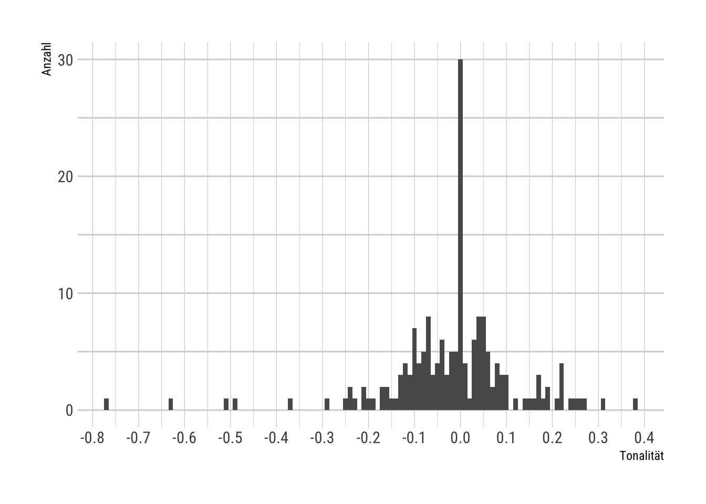

R
library(tidyverse)
library(udpipe)
# Einmaliges Herunterladen des UDPipe-Modells für Deutsch
# udpipe_download_model("german", model_dir = "beispielstudie/udpipe")
library(hrbrthemes)
theme_set(theme_ipsum_rc())
data <-
read_csv(here::here("beispielstudie/data/00_goldstandard.csv")) |>
mutate(text = str_replace_all(text, "[[:digit:]]", "")) |>
mutate(text = str_replace_all(text, "[[:punct:]]", "")) |>
mutate(text = str_to_lower(text))
ud_model <- udpipe_load_model(
here::here("beispielstudie/udpipe/german-gsd-ud-2.5-191206.udpipe")
)
for (row in 1:nrow(data)) {
if (row == 1) {
sentence <- data$text[row]
lemma_tokens <- udpipe_annotate(ud_model, sentence)
lemma_tokens_df <- as_tibble(lemma_tokens)
lemma_tokens_df <- lemma_tokens_df |> mutate(id = data$id[row])
}
if (row > 1) {
sentence <- data$text[row]
lemma_tokens <- udpipe_annotate(ud_model, sentence)
lemma_tokens_df_new <- as_tibble(lemma_tokens)
lemma_tokens_df_new <- lemma_tokens_df_new |> mutate(id = data$id[row])
lemma_tokens_df <- lemma_tokens_df |> bind_rows(lemma_tokens_df_new)
}
}
stopwords <- tibble(
words = unique(c(lsa::stopwords_de, tm::stopwords("german")))
)
tokens <-
lemma_tokens_df |>
filter(!is.na(lemma)) |>
select(id, lemma) |>
rename(words = lemma) |>
anti_join(stopwords, by = "words") |>
filter(nchar(words, type = "chars") > 1) |>
filter(words != "")
extract_senti_ws <-
function(x) {
res <- strsplit(x, "\t", fixed = TRUE)[[1]]
return(data.frame(words = res[1], value = res[2], stringsAsFactors = FALSE))
}
sentiws <-
c(
readLines(
here::here("beispielstudie/sentiws_v2/SentiWS_v2.0_Positive.txt"),
encoding = "UTF-8"
),
readLines(
here::here("beispielstudie/sentiws_v2/SentiWS_v2.0_Negative.txt"),
encoding = "UTF-8"
)
) |>
map(extract_senti_ws) |>
bind_rows() |>
mutate(
words = gsub("\\|.*", "", words) |> tolower(),
value = as.numeric(value)
) |>
group_by(words) |>
summarise(value = mean(value)) |>
ungroup()
tokens$words_1 <- sub("\\|.*", "", tokens$words)
tokens$words_2 <- sub(".*\\|", "", tokens$words)
tokens_sent <- left_join(tokens, sentiws, by = c("words_1" = "words"))
tokens_sent <- left_join(tokens_sent, sentiws, by = c("words_2" = "words"))
tokens_sent[is.na(tokens_sent)] <- 0
tokens_sent <- tokens_sent |>
mutate(isna_check = value.x + value.y) |>
filter(isna_check != 0) |>
mutate(value = if_else(value.x == 0, value.y, value.x)) |>
mutate(words_final = if_else(value.x == 0, words_2, words_1)) |>
select(id, words_final, value) |>
mutate(value = as.numeric(value))
ergebnis <-
tokens_sent |>
group_by(id) |>
summarise(sentiment = round(mean(value), digits = 5))
ergebnis |>
ggplot(aes(x = sentiment)) +
geom_hline(yintercept = c(0, 5, 10, 15, 20, 25, 30), colour = "lightgrey") +
geom_histogram(binwidth = 0.01) +
scale_x_continuous(n.breaks = 10) +
xlab("Tonalität") +
ylab("Anzahl")- 1
- Import der notwendigen Bibliotheken für Textverarbeitung, NLP und Visualisierung.
- 2
- Laden und Vorverarbeitung der Daten: Entfernung von Zahlen und Satzzeichen, Konvertierung zu Kleinbuchstaben.
- 3
- Laden des UDPipe-Modells für deutsche Lemmatisierung.
- 4
- Durchführung der Lemmatisierung für alle Textzeilen mit einer Schleife.
- 5
- Definition der deutschen Stoppwörter aus verschiedenen Quellen.
- 6
- Extraktion und Filterung der lemmatisierten Tokens: Entfernung von NA-Werten, Stoppwörtern und zu kurzen Wörtern.
- 7
- Hilfsfunktion zum Parsen der SentiWS-Diktionärdateien.
- 8
- Laden und Verarbeitung des SentiWS-Sentimentdiktionärs: Kombination positiver und negativer Wörter mit Mittelwertbildung bei Duplikaten.
- 9
- Trennung von Wörtern mit “|”-Zeichen in separate Spalten für die Sentimentanalyse.
- 10
- Verknüpfung der Tokens mit dem Sentimentdiktionär für beide Wortteile.
- 11
- Zusammenführung der Sentimentwerte und Auswahl des relevanten Wortes mit Sentiment.
- 12
- Berechnung des durchschnittlichen Sentiments pro Text-ID.
- 13
- Visualisierung der Sentimentverteilung mit einem Histogramm.
